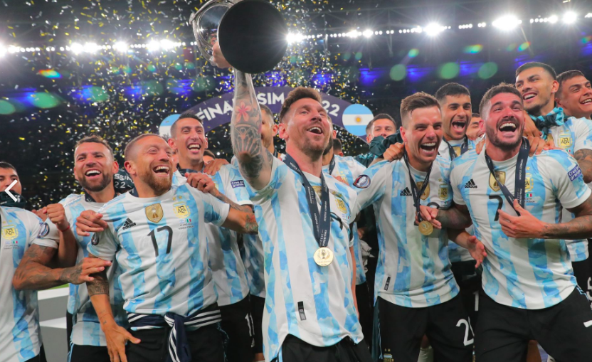

FINALISSIMA 2022
La selección argentina se impuso a la “azzurra” por 3-0 en el estadio de Wembley. Leo capitaneó la albiceleste y abrió el camino de la victoria con la asistencia del primer gol en el minuto 28.
BALÓN DE ORO 2022
Leo Messi encabeza la lista de los jugadores que han ganado más balones de oro contando con un total de siete victorias, un premio otorgado que distingue al mejor jugador del mundo.
FINALISSIMA 2022
La selección argentina se impuso a la “azzurra” por 3-0 en el estadio de Wembley. Leo capitaneó la albiceleste y abrió el camino de la victoria con la asistencia del primer gol en el minuto 28.
PSG V REAL MADRID
Jugador histórico del Fútbol Club Barcelona, al que estuvo ligado veinte años, desde 2021 integra el plantel del Paris Saint-Germain de la Ligue 1 de Francia.